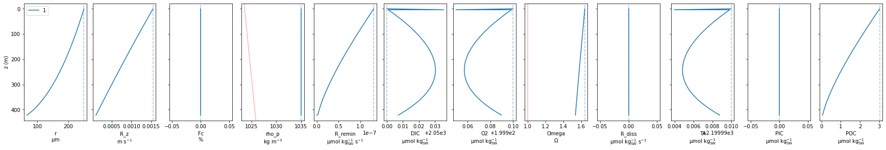
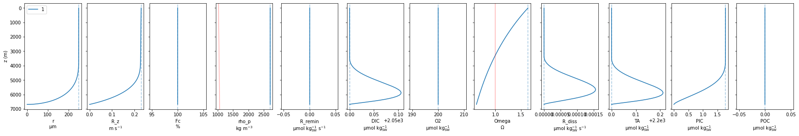

Contents
%load_ext autoreload
%autoreload 2
from ballasting import model, plot
---------------------------------------------------------------------------
ModuleNotFoundError Traceback (most recent call last)
Input In [1], in <cell line: 3>()
1 get_ipython().run_line_magic('load_ext', 'autoreload')
2 get_ipython().run_line_magic('autoreload', '2')
----> 3 from ballasting import model, plot
File ~/work/teaching/teaching/Part_III/OceanAcidification/P3_Ballasting/ballasting/model.py:2, in <module>
1 import numpy as np
----> 2 import cbsyst as cb
3 from tqdm.notebook import tqdm
5 from .helpers import calc_rho_f, calc_rho_p, calc_Rdiss, calc_Rremin, calc_wsink, sphere_vol_from_radius, sphere_radius_from_vol, day_2_seconds, calc_O2_sat
File ~/py3/lib/python3.10/site-packages/cbsyst/__init__.py:1, in <module>
----> 1 from cbsyst.cbsyst import *
2 from cbsyst.helpers import data_out, Bunch
4 VERSION = '0.4.0-alpha'
File ~/py3/lib/python3.10/site-packages/cbsyst/cbsyst.py:7, in <module>
5 import numpy as np
6 import kgen
----> 7 from cbsyst.helpers import Bunch, maxL
8 # from cbsyst.MyAMI_V2 import MyAMI_K_calc, MyAMI_K_calc_multi, MyAMI_K_calc_direct
9 from cbsyst.carbon import calc_C_species, calc_revelle_factor, pCO2_to_fCO2, fCO2_to_CO2
File ~/py3/lib/python3.10/site-packages/cbsyst/helpers.py:1, in <module>
----> 1 import uncertainties.unumpy as unp
2 import numpy as np
3 import pandas as pd
ModuleNotFoundError: No module named 'uncertainties'
mPOC = model.sinking_particles(N=1, Fc=0)
plot.models(mPOC);

mPIC = model.sinking_particles(N=1, Fc=1)
plot.models(mPIC);

# % CaCO3
plot.models([model.sinking_particles(Fc=fc) for fc in [0, 0.01, 0.025, 0.05]])
(<Figure size 1728x288 with 12 Axes>,
<AxesSubplot:xlabel='POC\n$\\mu mol~kg_{SW}^{-1}$'>)
# remineralisation rate
plot.models([model.sinking_particles(p_lifetime=d, tmax_days=15) for d in [1, 2.5, 5]])
(<Figure size 1728x288 with 12 Axes>,
<AxesSubplot:xlabel='POC\n$\\mu mol~kg_{SW}^{-1}$'>)
# particle radius
plot.models([model.sinking_particles(r0=r, N=2000 * 250**3 / r**3, tmax_days=15) for r in [150, 250, 350]])
(<Figure size 1728x288 with 12 Axes>,
<AxesSubplot:xlabel='POC\n$\\mu mol~kg_{SW}^{-1}$'>)